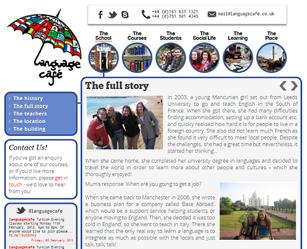

Personal Profile
I am a web developer and application programmer with an upper second class honours degree in Computer Science from Lancaster University. I have 16 years’ experience of developing websites with HTML and CSS and 8 years’ experience of designing, implementing and testing bespoke web-based applications using object-oriented PHP in my role as Network Specialist at Lancaster University.
I am technically literate across a number of web-related disciplines, with an eye for design and attention to detail. I have excellent written and verbal communication skills, I work well as part of a team and can manage resources effectively to prioritise tasks and complete projects on time.
Education and Qualifications
2010
ITIL V3 Foundation
2008
Prince 2 Foundation
2007
Cisco Certified Network Associate (CCNA)
1999-2000
Burger King Limited
Basic Management Training (Distinction 94%)
Service Supervisor (Distinction 90%)
1999-2001
A-Levels - Whitby High School Sixth Form
Information Technology (A), Physics (A), General Studies (B), Maths (D)
1994-1999
GCSEs - Whitby High School
10 A and A* grades, including: IT (A*), English (A*), German (A*), Maths (A), Science (AA)
Skills and Experience
- HTML5 and CSS3
I have been developing websites since 1997. One of my strongest skills is the ability to convert an outline design on paper into a structured and complaint website.
- jQuery
I’ve used jQuery in multiple projects to provide UI widgets and look-and-feel enhancements, making my websites feel more interactive and usable.
- Version control
I use SVN to control all of my source code. I am learning GIT.
- Linux
All of my projects are hosted on Linux platforms (Debian/Ubuntu) and I have 8 years’ experience in administering Linux servers and running a Linux desktop as my main PC.
- MVC and frameworks
I have developed applications with Ruby-on-Rails and CakePHP. I have 6 years’ experience of developing with Mason in Perl.
- Networking technologies
As a Network Specialist I understand how applications communicate over a network and have a strong background in network design and operation.
Employment History
August 2012 - present
Lancaster University
Senior Advisor
Responsibilities
- Ensuring the welfare system within Grizedale College operates smoothly and effectively
- Recruiting and co-ordinating a team of voluntary advisors to act as mentors for new students
- Supporting students through their academic studies by offering pastoral care and advice and presenting cases at formal university hearings
This is a challenging role that often requires a great deal of patience, empathy and organisational skills. As Senior Advisor I have developed my ability to communicate clearly with a wide range of people and have acquired influencing skills by presenting practical solutions to students’ problems using a structured approach with sound logical arguments. I fulfil this role alongside my duties as Network Specialist which requires effective time-management skills.
June 2004 - present
Lancaster University
Network Specialist
Responsibilities
- Maintenance of network infrastructure and related services across the campus
- Technical lead for the IP telephony network, Cisco Call Manager and related applications
- Service owner for ResNet, the Student Residences Network (7000 connections)
Portfolio
As a Network Specialist I have developed several web-based applications using PHP, Perl and Ruby-on-Rails (all OO) hosted in a Linux server environment with a mix of PostgreSQL and MySQL databases.
-
Phone Lock
An application to restrict a phone’s dialling privileges. I designed this application to allow users to lock and unlock their phone with a PIN. An XML-based phone interface on Cisco 7940 handsets allows users to control their phone and see its status. The back-end application issues changes in dialling level to the Cisco Call Manager phone system using an XML SOAP interface. A web-based GUI gives admin staff the capability to control all phones and provides management reporting and alerting (e.g. failed login attempts, unusual activity out-of-hours).
-
Soft Phone Service
A self-service web front end for Asterisk PBX. I developed a web application to manage the provisioning of soft phone accounts. A web portal allows users to authenticate via single sign-on using CoSign and automatically sets up their soft phone account. MySQL stores the dial plan and the Asterisk application is configured to reference the database in real-time, rather than cache static files in memory. An admin GUI provides a dashboard of tools, including dial plan management and call usage filtering.
-
ResNet
resnet.lancs.ac.ukA device validation portal for students in halls of residence. This was a large project involving many developments over several years. Initially I designed a student portal using the Mason framework to guide users through getting connected. The platform copes with a wide range of browser and operating system combinations, detecting the user-agent and rendering custom CSS and Javascript where necessary. ImageMagick provides screenshots with personalised annotations to improve the user experience. A RESTful HTTP API communicates with the university’s in-house network access control system to grant users rights to the network and interfaces with network switches via SNMP to reconfigure the network in real-time. A quota system was later introduced where I converted bandwidth utilisation data from an xml feed into a meaningful graph using a ChartDirector library. Rate-limiting configuration is applied to core network equipment via an XML API once a user exceeds their given quota.
-
One Click Database
This is my latest project, and my first foray into Ruby-on-Rails. The application provides a web administration GUI for provisioning Cisco IP Phones and maintaining a mapping of users, their devices, extension numbers and unified communications features. It integrates with the Cisco Call Manager phone system using an XML SOAP API to deploy new devices and allow the Service Desk to control and view the display of any phone on campus. Written in Rails 3, I have used my existing experience from working with other MVC frameworks such as Cake PHP to quickly learn Ruby and the Rails framework. The next phase is to provide a self-service portal to allow departments to manage their own phone changes.
2008 - present
Self Employed
Freelance Developer
Throughout my career I have always developed web sites and web applications in my spare time. This is how I initially built up my knowledge of HTML and the W3C standards, where my roots as a developer started using HTML3.2 back in 1997.
Portfolio
-
Language Cafe
www.languagecafe.co.uk Language Café are a small language school in Salford, Manchester. The brief was to create a website that presented a friendly, welcoming and non-corporate image to students from all nationalities. I used Joomla 2.5 with PHP as the CMS, working closely with the school’s director Helena to convert her vision for the site from sketches on paper into a set of templates in HTML5 and CSS3. The site benefits from a clean look-and-feel with SEO-optimised content and integration with Google Analytics for traffic management. The next phase of this project is to implement a responsive design for mobile devices and tablets using media queries.
-
LADOS
www.lados.org.ukI was a member of the Lancaster Amateur Dramatic and Operatic Society for 6 years where I worked as a voluntary sound engineer, creating effects, wiring stages and mixing vocals in live performances. I was approached to design an online presence for the society in 2005 which I wrote in PHP using my own framework and MySQL database for content; since then I have redesigned the site with WordPress and trained the Committee in the use of its CMS features.
-
Inquire UK
I developed a custom document management system for Inquire UK in PHP, to allow authors to submit proposals via a web-portal. The power in this system is in the back-end application, which allows committee members to review submissions, rank them and flag them for further consideration. This project makes heavy use of jQuery to provide AJAX-style editing of information and real-time construction of e-mail replies to submissions in the browser.
1999 - 2003
Burger King Limited
Supervisor
Responsibilities
- Managing the operation of the counter and kitchen on a day-to-day basis
- Induction, training and supervision of new members of staff.
- Solving customer problems in an empathetic and logical manner
- Raising awareness of business objectives among staff, by implementing up-selling techniques and portion control procedures
- Stock control and cash management
This was a part-time job to support my studies. My main focus was on providing the highest level of product quality, customer service and cleanliness.